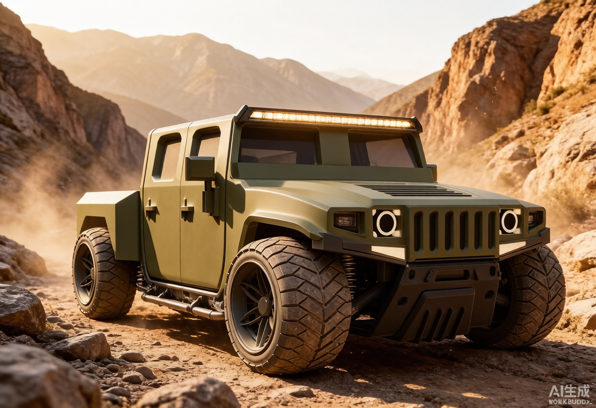
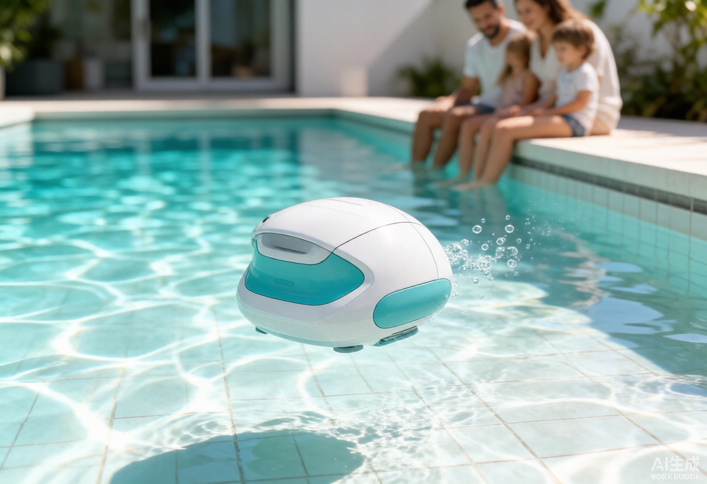
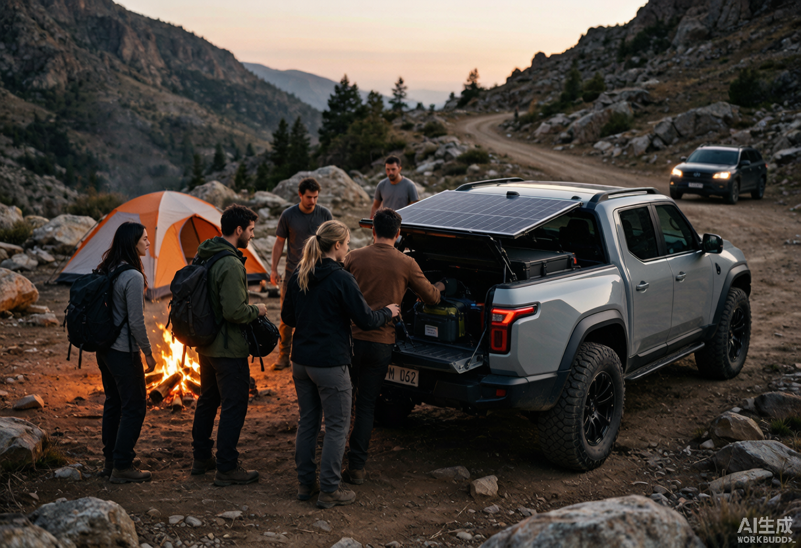
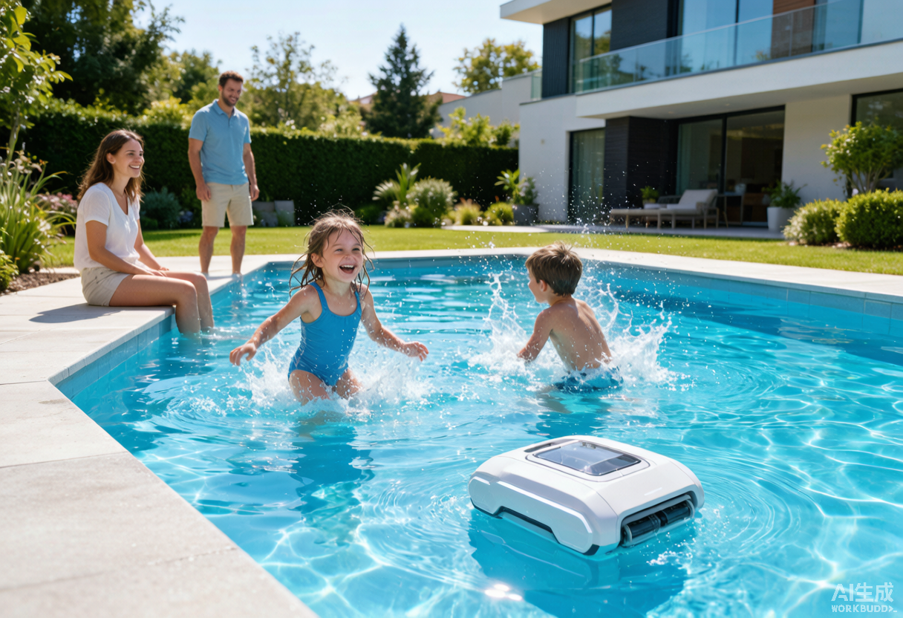
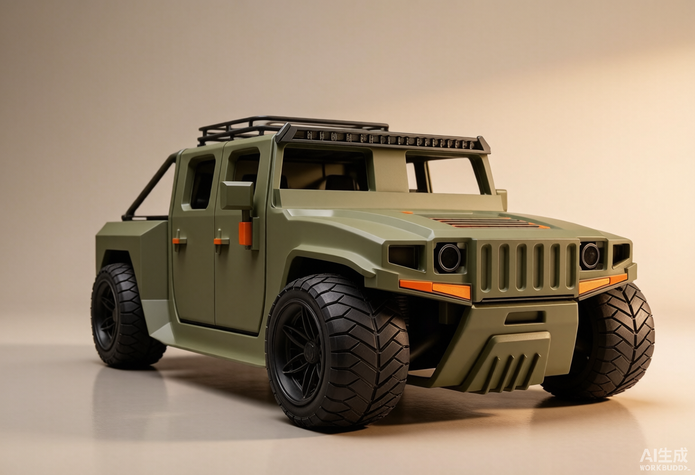

Recovery Gallery
找回的「带光影渲染图」
以下是从 WorkBuddy 自动备份（modify_backup）中找回的、q-2 修正前生成/使用的 AI 渲染图。每张图都标注了原始用途与当前状态。请挑选需要放回作品集的图，并告诉我放哪个位置。

hero-truck.png
原「硬派越野电动载具」项目最终主图。AI 生成，带户外峡谷光影与材质。
8-15 19:23已找回
hero-underwater.png
原「智能水下清理器」项目最终主图。该项目已删除，图片仍可备用。
8-15 19:23项目已删
scenario-truck.png
原越野载具场景氛围图，沙漠逆光环境。
8-15 19:29已找回
scenario-underwater.png
原水下清理器场景氛围图。项目已删除。
8-15 19:27项目已删
越野车玩具 · 渲染主图
橄榄绿合金压铸质感，适合「越野车玩具」项目最终主图或封面。
8-15 20:48已找回越野车玩具 · 场景图
儿童在客厅地毯上玩越野车玩具，暖光居家场景。
8-15 20:48已找回未找回的 3 张
hero-dslr.png、hero-headphones.png、hero-catnest.png 在本地 modify_backup 与 blobs 缓存中均未找到完整文件。它们可能是通过临时 blob URL 引用、未被自动备份，或在清理时被永久删除。
解决方案：
- A. 基于现有真实素模重新生成 3 张带光影的 AI 渲染图（ImageGen / 混元）
- B. 如果你本地还保存有这 3 张原图，直接发给我路径或上传
- C. 保持当前真实素模主图，只用已找回的图补充首页/场景